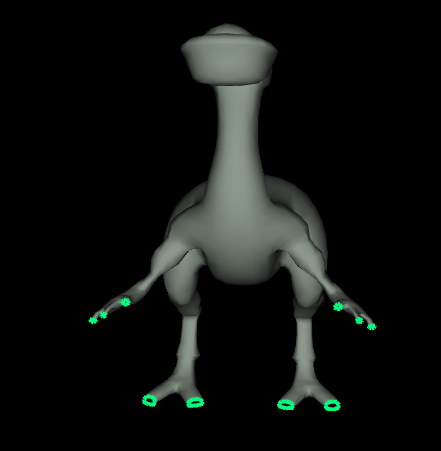

Large Scale Assignment 2: Polygon Mesh Processing (100 Points)
Due Wednesday 11/20/2019 at 11:59PM
Overview
The most ubiquitous representation of 2D surfaces in 3D space is the polygon mesh. In this assignment, you will explore the half-edge dsta structure, which is the gold standard for traversing oriented manifold meshes. You will begin with some basic traversal tasks, which will then unlock some more advanced topological and geometric operations.
Scoring
This assignment is out of 100 points. 80 of these points are required tasks that everyone has to do. Beyond that, there are a number of extra points up for grabs which you can choose from to pursue your interests and "make the assignment your own." Any points that you get beyond 20 will apply to extra credit at a rate of 1 point, 4/5 points, 4/5^2 points, 4/5^3 points, etc. The required points and the optional points will be graded independently. So, for instance, if you get an 75/80 on the required points and you earn 30 optional points, then your final score will be 75 + 20 + 4.6 = 99.4/100 points, which is quite a formidable score!
Collaboration
You are allowed to work very closely with other students in the class in a "buddy" capacity, and even to look at each others' code as you're debugging. But I expect each student to submit their own code. Please indicate to me on your README who your buddies were.
Getting Started
-
Click here to download the repository of skeleton code for this assignment. Note that you will also need to download the most recent version of ggslac and place it at the root of the LargeScale2_3DShapeModeling assignment. If you have git installed on your computer, you can simply type
git clone --recursive https://github.com/Ursinus-CS476-F2019/LargeScale2_3DShapeModeling.gitNOTE: You will only need to edit
halfedgemesh.jsto complete all of the tasks in the assignment. - As with prior assignments, you will need to run a local web server to get this to work.
- The collection of meshes in ggslac has recently been updated, so you should play around with the meshes in the meshes/ directory in ggslac. If you want to use any additional meshes, make sure they are .off files. If not, use meshlab to convert them.
Half Edge Objects
The three object subtypes for a half edge mesh are HEdge (for a half edge), HFace (for a face), and HVertex (for a vertex). Their fields are as follows:
|
HVertex
|
HFace
|
Debugging GUI
The main file where you view the results of your ray tracer is MeshProcessing.html. There are various menus here that you can use to test the different features that you implement.
Submission Instructions
You will submit yourhalfedge.js code to Canvas when you are finished, along with screenshots and .off files for the art contest, if you choose to submit something. Please also submit a README.txt file with both submissions with the following information:
- Your name
- The "buddies" you worked with (see collaboration above)
- A list of tasks that you implemented, and how many points you believe you earned.
- A description of your art contest submission if you have one, as well as:
- One of the two statements below
- "I consent to have my art contest submission posted publicly on the class web site. My name/pseudonym for public display is .
- "I do not wish to post my art contest submission publicly"
- One of the two statements below
- Approximately how many hours it took you to finish this assignment (I will not judge you for this at all...I am simply using it to gauge if the assignments are too easy or hard)
- Your overall impression of the assignment. Did you love it, hate it, or were you neutral? One word answers are fine, but if you have any suggestions for the future let me know.
- Any other concerns that you have.
Mesh Traversal
NOTE: You will have to finish these tasks before moving onto the geometric and topological tasks.
NOTE ALSO: The lighting will not look very good in this until you get the per-vertex normals working, which requires some of the traversal functions in this section. To see the mesh better before then, you should click drawEdges in Mesh Display Options.
face.getEdges() (6 Points)
Given an HFace class, return a list of the half-edges that have it as its face, in CCW order
Code To Write
You should fill in thegetEdges() function of the HFace class.
Tips
- A do while loop is a good choice for this task.
- With this and with all of the other tasks, you can assume that the half-edge mesh has been initialized properly, and that the
nextpointer points to any half-edge in CCW order.
Debugging GUI
If you visit theFace Tests menu in MeshProcessing.html, you can test this function on a particular face when you click "showResult." This will display a magenta list of edges that were returned superimposed on the mesh, as shown below on box2402.off:vertex.getVertexNeighbors() (7 Points)
Given an HVertex class, return a list of vertices that are attached to it
Code To Write
You should fill in thegetVertexNeighbors() function of the HVertex class.
Tips
- A do while loop is a good choice for this task.
- As discussed in class, you will have to jump across a lot of pairs to make this work.
Debugging GUI
If you visit theVertex Tests menu in MeshProcessing.html, you can test this function on a particular vertex when you click "showResult." This will display a cyan list of vertices (and the edges that attach them) returned from your function, superimposed on the mesh, as shown below (icosahedroncut.off is a good small mesh to test this on which covers a lot of cases):vertex.getAttachedFaces() (7 Points)
Given an HVertex class, return a list of faces that have this as a vertex
Code To Write
You should fill in thegetAttachedFaces() function of the HVertex class.
Tips
- This is incredibly similar to the last task, except when you're creating a list of faces, be sure to only add a face if it is not null (!(h.face === null)). Otherwise, you will run into some problems later with meshes that have boundaries.
Debugging GUI
If you visit theVertex Tests menu in MeshProcessing.html, you can select this function from a dropdown menu and test it on a particular vertex when you click "showResult." This will display a cyan list of vertices (and the edges that attach them) returned from your function, superimposed on the mesh, as shown below: |
Geometric Tasks
NOTE: While you may need to perform topological traversals to help you with this task, the only variable that you will ever update is the position of a vertex, which is the only geometric property in the mesh.
face.getArea() (5 Points)
Given an HFace class, return its area
Code To Write
You should fill in theface.getArea() function of the HFace class.
Tips
- Every face with N edges can be divided into N-2 triangles.
- You can (and should) reuse your triangle area code from mini assignment 1
vertex.getNormal() (10 Points)
Given an HVertex class, return a normal associated to it, which is the weighted average of the face normals attached to this vertex, weighted by the respective face areas.
Code To Write
You should fill in thegetNormal() function of the HVertex class. You should also fill in the getNormal() function of HFace as a helper function. For the face normals, you can assume that they are flat, so that you only need to compute the normal of a single triangle in the face if it has more than three edges.
Tips
- You should make use of your
vertex.getAttachedFaces()function - Make sure your face (and subsequently vertex) normals are actually normalized. For the large meshes with many small triangles, if you just use the cross product, it will have a very small magnitude, and this will affect later tasks (particularly inflate/deflate).
Debugging GUI
You can display the normals you calculate by clicking drawNormals in the Mesh Display Options menu. Below shows a before and after on cow.off (by default, the normals start off all pointing to the right)
Before |
After |
Furthermore, the Blinn-Phong shading will look much better with the correct normals once you have them. Below is an example on homer.off
Before |
After |
Inflate/Deflate (10 Points)
Move each vertex of the mesh by some pre-specified amount along its normal.
Code To Write
You should fill in theinflateDeflate() function of the HEdgeMesh class.
Tips
- You will have to loop through all of the vertices in the mesh, which are stored in a list
verticeswhich is a property ofHEdgeMesh(NOTE: The vertices are not stored in any particular order). - You should only update the
posfield of eachHVertex; the topology should remain fixed. - The
scaleAndAdd()function ofvec3will come in handy here. Click here to see the documentation. - Note that the normals change after you apply these operations, so they are not directly invertible. This means you should not expect to get the same result when you deflate after inflating, for instance.
Debugging GUI
You can display the result of this operation by clicking inflateDeflate in the Geometric Tasks menu. You can set the factor by which to inflate with the inflateFac slider. A positive number inflates, and a negative number deflates. Depending on the dimensions of your mesh, you may have to adjust the dynamic range of this a lot (e.g. a mesh whose bounding box is [0, 1000] x [0, 1000] x [0, 1000] is much less affected by moving along the normal by a factor of 0.1 than a mesh whose bounding box is [0, 1] x [0, 1] x [0, 1])
Below is an example of running the function on bunny.off with a factor of 0.005
Before |
After |
 |
Below is an example of running the function on homer.off with a factor of -0.005, which is actually a deflation. Notice how his fingers and mouth get thinner
Before |
After |
Geometric Tasks: Extra
Laplacian Smooth/Sharpen (10 Points)
Move each vertex of the mesh by the average of the vectors from the vertex to its neighbors. This is depicted by the green vector in the image below, which is the mean of the black vectors pointing from the vertex (red dot) to its neighbors (grey dots). When adding this vector to the vertex, it is smoothed, as it will move protrusions down towards a plane fit through its neighbors (the tip of the green arrow). When subtracting this vector, it moves away from this plane, and the mesh is sharpened.
Code To Write
You should fill in thelaplacianSmoothSharpen() function of the HEdgeMesh class.
Tips
- The
scaleAndAdd()function ofvec3will come in handy here as well. - To really do this correctly, you should create a new list of vertex positions and then copy them over at the end, so that neighboring vertex positions don't change as you're iterating.
Debugging GUI
You can display the result of this operation by clicking laplacianSmooth and laplacianSharpen in the Geometric Tasks menu.
Below is an example of running 5 iterations of smooth on proftralie.off
Before |
After 5 Iterations of Smooth |
Below is an example of running a single iteration of sharpen on cow.off
Before |
After 1 Iteration of Sharpen |
Per-Vertex Warp (10 Points)
Apply some function to the vertices to move them to a new position. For instance, you could try to make the mesh twist by moving each vertex up a helix.
Code To Write
You should fill in thewarp() function of the HEdgeMesh class.
Topological Tasks
Find Boundary Cycles (10 Points)
Return a list of boundary cycles on the mesh, where each boundary cycle is its own list of HEdge objects, each with a null face.
Code To Write
You should fill in thegetBoundaryCycles() function of the HEdgeMesh class.
Tips
- You will need to loop through all of the edges in the mesh to find ones that have a face as null (
e.face === null). You can access the list of edges as theedgesfield ofHEdgeMesh. - To make sure you don't accidentally repeat boundary cycles, you should add a variable to an edge which stores whether this edge has been checked yet, and initialize all of these variables to be "false." Note that you can add fields to objects dynamically in Javascript.
Debugging GUI
You can display the boundary cycles computed by your code by clicking the showBoundaries checkbox in the Topological Tasks menu
Below are a number of examples of boundaries for different meshes:
|
|
|
|
|  |
Genus of A Watertight Mesh (5 Points)
Return the genus of a watertight mesh, or -1 if the mesh is not watertight.
Code To Write
You should fill in thegetGenus() function of the HEdgeMesh class.
Tips
- Remember that there are actually two half edges for every actual edge in the mesh, so be sure not to double count them!
-
You should use your
getBoundaryCycles()function to figure out if the mesh is watertight.
Debugging GUI
If you have the showBoundaries checkbox checked, then the genus field should update with the genus that you're computing for the mesh. You should check the following shapes below
Examples of Meshes of Genus 0
|
|
|
|
Examples of Meshes of Genus 1
|
|
 |
Examples of Meshes of Higher Genus
|
|
Topological Tasks: Extra
Fill Holes (15 Points)
For each boundary cycle, add triangle faces until the hole is completely blocked up.
Code To Write
You should fill in thefillHoles() function of the HEdgeMesh class. Be sure to set all of the fields of new faces and edges properly, and link them to existing half-edges in the mesh.
Tips
- To make this look nice, you should always add triangles with the largest minimum angle out of the all of the available triangles you can add at any particular point in time.
Mesh Creation Tasks
Below, you have the choice between two 20 point tasks. If you do them both, then the second one counts as 20 extra points. Note that if you do Loop Subdivision instead of Linear Subdivision, then that task is actually 30 points!
Linear Subdivision (20 pts) or Loop Subdivision (30 pts)
Perform linear or loop subdivision on the mesh.
Code To Write
You should fill in thesubdivideLinear() function or the subdivideLoop() of the HEdgeMesh class.
Truncate (20 pts)
Truncate the mesh by slicing off the tips of each vertex by some amount.
Code To Write
You should fill in thetruncate() function of the HEdgeMesh class.
Art Contest Submission (5 Points)
Do some interesting combination of your techniques above, and save the result as an .off file using the saveOffFile button in the menu. You should submit your .off files, along with screenshots. Feel free to submit multiple .off files, including interesting bugs!